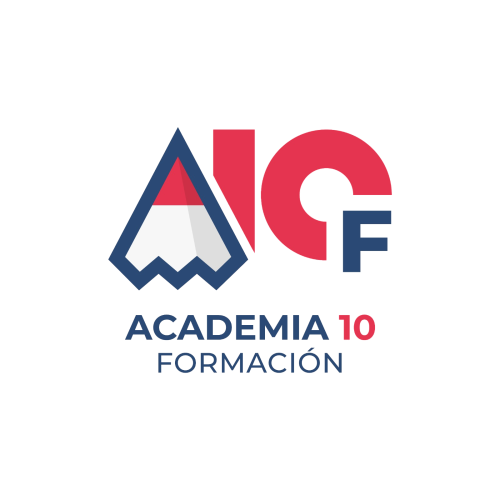
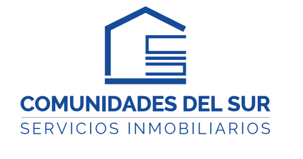
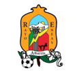
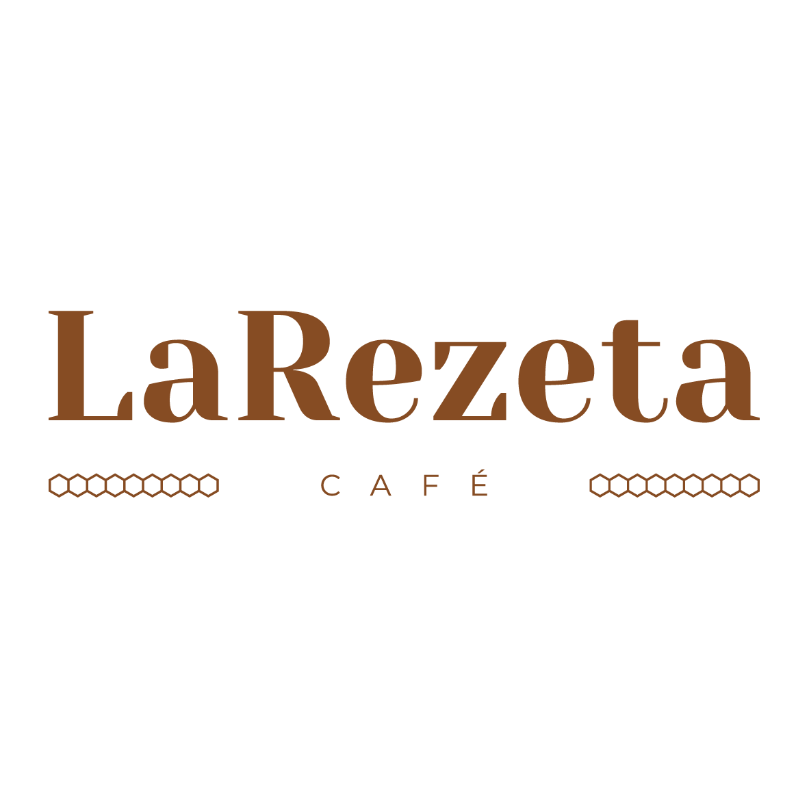

Primera edición
Diseñamos, probamos y defendimos nuestro CanSat hasta convertirnos en finalistas de Andalucía.
En nuestra primera edición fuimos finalistas y nos quedamos muy cerca de la fase nacional. Este curso volvemos como el mismo equipo, con más experiencia, una misión más ambiciosa y todas las ganas de ganar.
No empezamos de cero: partimos de todo lo aprendido en nuestro primer lanzamiento para construir un CanSat más sólido, más inteligente y listo para llegar más lejos.
Un salto de edición, no de equipo. Conservamos la ambición de la primera misión y sumamos todo lo que nos enseñó.
Diseñamos, probamos y defendimos nuestro CanSat hasta convertirnos en finalistas de Andalucía.
Nos quedamos a un paso, pero salimos de la experiencia con una hoja de ruta clara para mejorar.
Volvemos con una misión renovada, más pruebas y un objetivo compartido: llegar y ganar.
Un CanSat es un dispositivo que cabe en una lata de refresco y que integra todos los subsistemas de un satélite real: alimentación, sensores, comunicaciones y control.
La Agencia Espacial Europea propone el reto CanSat para que estudiantes como nosotros experimenten con misiones espaciales reales y desarrollen talento STEM local.
Medir presión atmosférica y temperatura, transmitir los datos en tiempo real y calcular la altitud a partir de la presión. Después analizamos el comportamiento del CanSat durante el vuelo.
Captura continua de imágenes del terreno y procesamiento con IA para detectar patrones de riesgo, humo, focos de calor o personas. Buscamos una alerta temprana ante incendios y apoyo a la localización.
Aseguramos un aterrizaje correcto mediante paracaídas y localización para recuperar el CanSat y reutilizarlo.
Operamos una estación en tierra que recibe los datos en tiempo real para verificar el sistema durante el descenso.
Agradecemos el apoyo de quienes ya han apostado por SuarezSat. Su ayuda nos permite seguir avanzando.

Patrocinador principal actualmente, con una gran aportación.

Patrocinio destacado y clave que impulsa nuestro proyecto.

Gran patrocinador que nos ha ayudado en el desarrollo del proyecto.

Equipo de fútbol local que aportó el primer impulso al proyecto.

Apoyo en el logotipo y donativo clave para seguir avanzando.

Colaboración local que nos ayuda a continuar con el proyecto.
Desarrollamos y configuramos la IA, definiendo su funcionamiento y validando los objetivos del proyecto.
Adaptamos la lata a las necesidades del sistema, cuidando espacio, protección y estructura.
Realizamos pruebas para comprobar que todo funciona correctamente y corregir posibles errores.
Presentamos el proyecto en el concurso CanSat y mostramos resultados y aprendizajes.